Objetivos:
- Constatar as características psicoacústicas de pessoas distintas de sensibilidade à intensidade, banda audível e mascaramento harmônico;
- Efetuar alguns procedimentos de medição e aferição acústicos e depois analisá-los.
Teste de Audiometria. (PIGEON, S., 2016)
Teste de audiometria pelo computador, utilizando Headset. Em azul, o resultado para a orelha esquerda, em vermelho, o resultado para a orelha direita e em verde, o resultado para ambas as orelhas ao mesmo tempo.
As imagens abaixo são os resultados para cada aluno, sendo que o nome do aluno encontra-se abaixo da imagem correspondente.
Teste usando o áudio do computador
Daniel não possui áudio externo no computador, logo não foi possível realizar este teste.
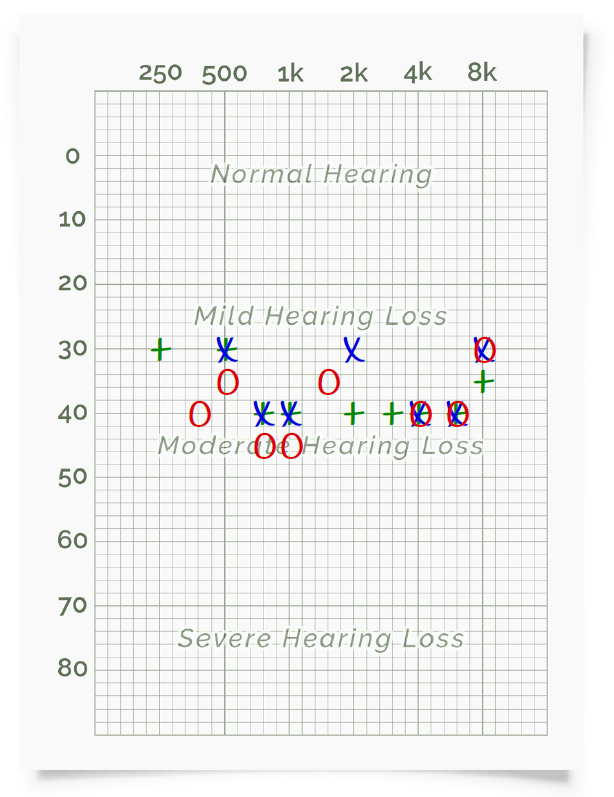
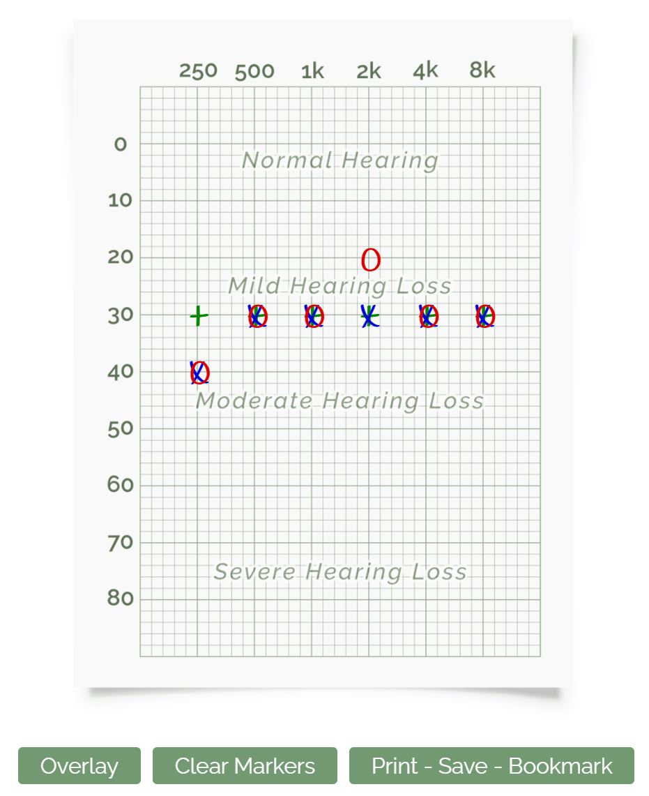
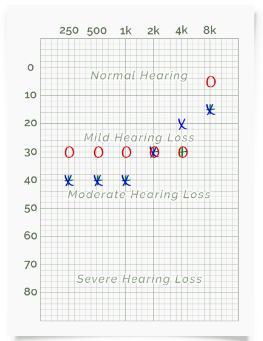
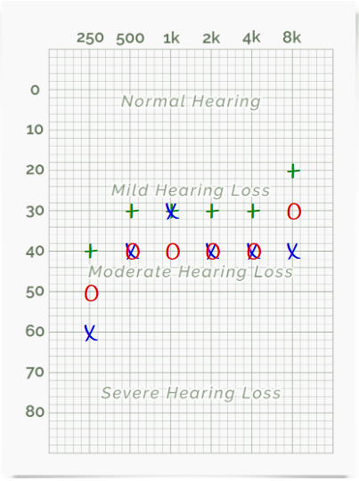
Teste usando o computador e fones de ouvido
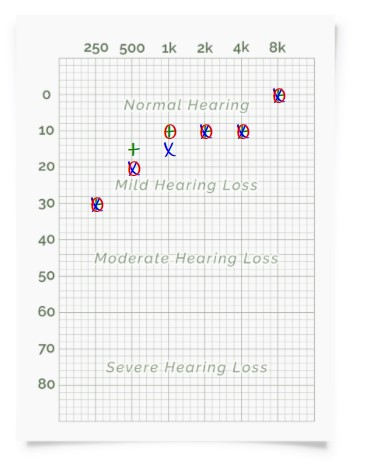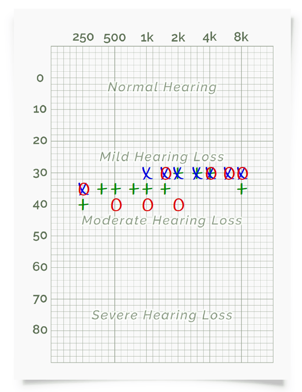
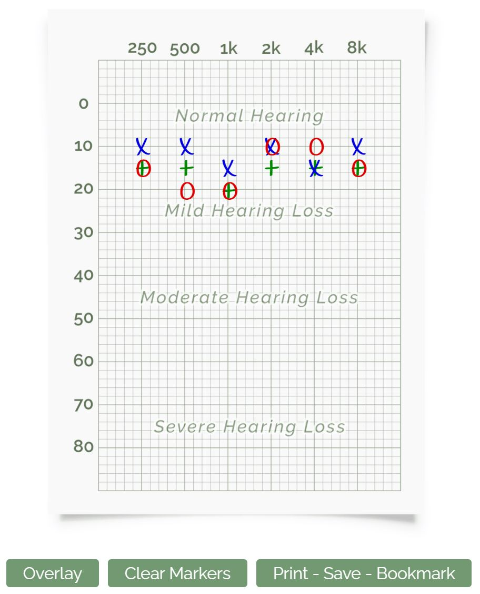
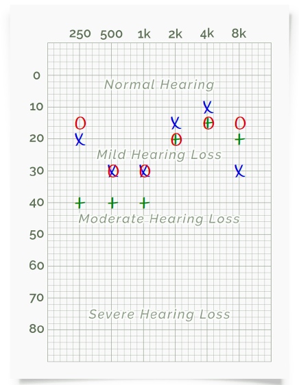
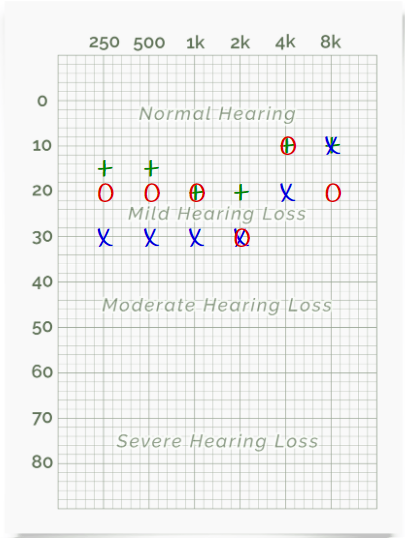
Teste usando o celular
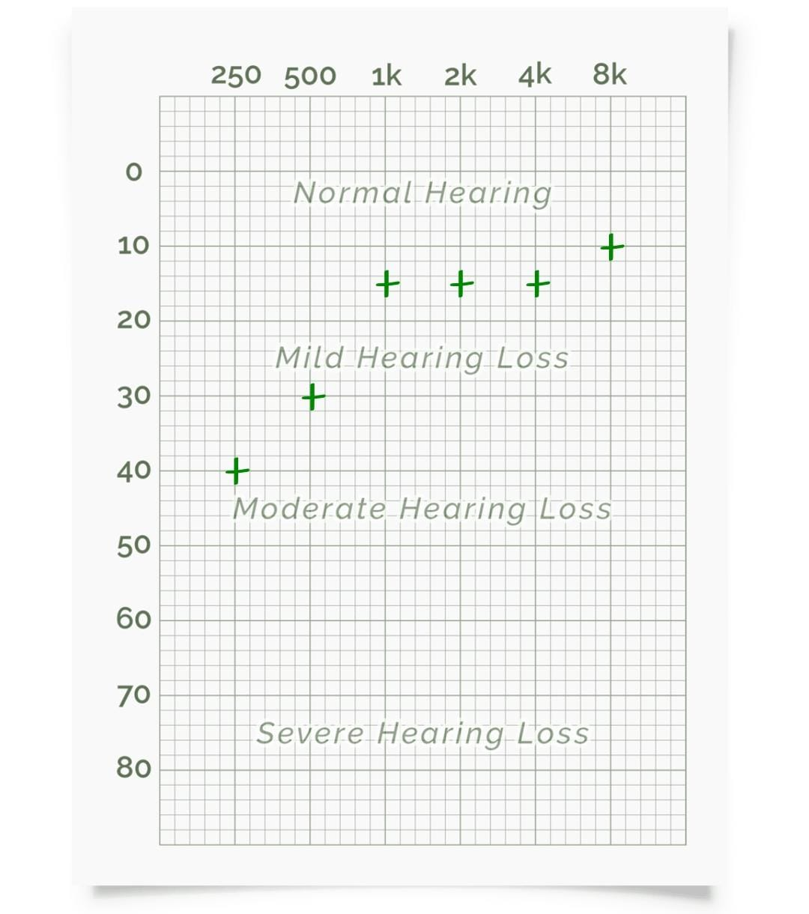Teste usando o celular e fones de ouvido
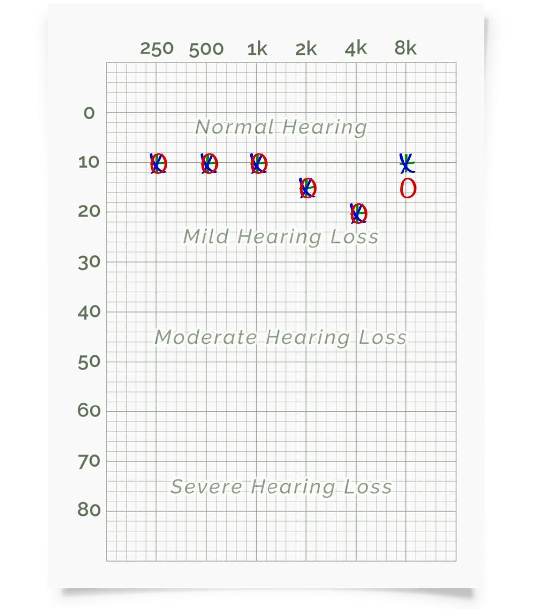Conclusões
Beatriz: Há perda auditiva leve, sendo que para a orelha direita é ligeiramente maior que para a orelha esquerda. Há maior dificuldade em ouvir sons em alta frequência do que em baixa.
Rodrigo: Usando apenas o audio do computador é possível perceber para ambas as orelhas uma resposta melhor para frequências maiores com relação as frequências menores. Os resultados da orelha direita são melhores do que os resultados da orelha esquerda, sendo deste modo mais sensível. Usando o fone com o áudio do computador os resultados para ambas as orelhas permanecem iguais para frequências baixas melhorando a percepção para frequências mais altas. Os resultados das orelhas direita e esquerda são melhores do que no caso sem o fone tendo a orelha esquerda uma percepção ligeiramente melhor.
Leonardo: Sem a utilização do fone de ouvido, o resultado indica uma perda leve auditiva leve. Já utilizando o fone de ouvido, a audição foi enquadrada no nivel normal. Essa diferença pode ser atribuída tanto às diferenças de hardware, quanto à diferença de calibração do volume do som, ao tentar sintonizar com as mãos sendo esfragadas. Porém, mesmo assim, é possível perceber que os resultados se mantiveram consistentes de uma orelha para outra.
Felipe: Houve grandes diferenças entre os dois métodos, deve-se levar em consideração que o meu notebook é extremamente ruidoso, isso pode acarretar em no resultado observado, Outro ponto que deve ser levado em consideração é que o fone intra auricular é bastante invasivo, de maneira que ele direciona o som diretamente para o tímpano, dessa forma é possível que com este fone, foi produzido um melhor resultado caso fosse usado um fone de ouvido envolvente. Entretanto, deve-se ressaltar que a orelha esquerda obtêm melhores resultados que a orelha direita
Daniel: Nos testes realizados é possível ver uma perda auditiva leve nas frequências mais baixas, porém os padrões de perda auditiva são diferentes para os testes realizados, indicando uma provável diferença entre o processamento de áudio do PC e do celular.
Teste de Faixa Audível
Teste usando o áudio do computador com e sem fones de ouvido e utilizando o celular.
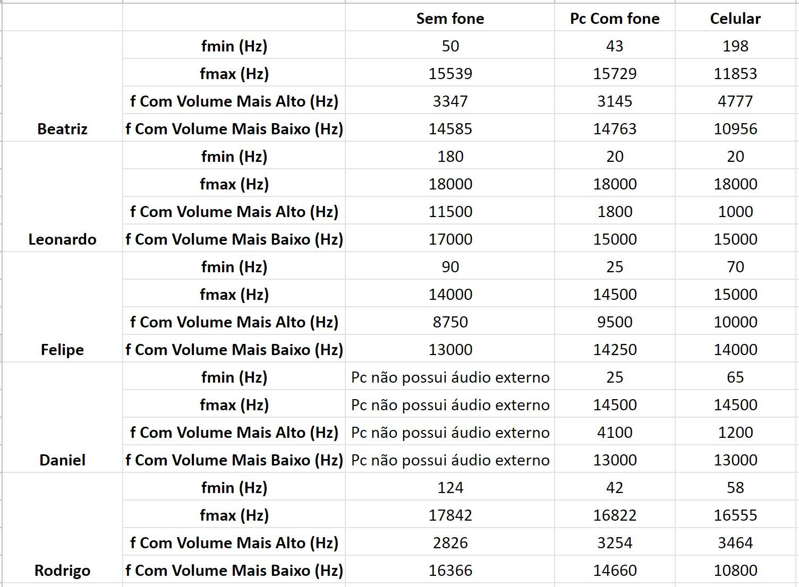Conclusões
Beatriz: As frequências mínima, máxima, de som mais baixo e mais alto, são bem similares quando o teste é realizado utilizando o computador. Já quando é utilizado o celular a frequência mínima é quase 4 vezes maior (comparando-se com o computador) e a frequência máxima é aproximadamente 4000Hz menor.
Felipe: Houve algumas diferenças em relação às diferentes plataformas que foram utilizadas para fazer o teste, essa diferença pode se dar pelo hardwares distintos que os dispositivos utilizados possuem, pois em casos de baixa frequência eles podem possuir uma faixa de frequência mínima de execução, em relação a alta frequências também pode estar relacionado ao hardware, mas também pode ser um problema de audição.
Rodrigo: As frequências mínima e máxima permanecem muito similares para os casos do audio do computador, uso do fone no computador e do fone no celular, porém, nota-se uma percepção melhor com o fone pela redução do valor da frequência mínima. Percebe-se nos testes que em intervalos similares experimentou-se a percepção de frequências com o "volume alto", sendo recorrente o movimento entre frequências com "volume baixo" e frequências com "volume alto"
Leonardo: É possível novamente perceber diferenças de percepção de acordo com as condições, em relação à realização pelo notebook ou pelo celular, e também à utilização ou não de fones ouvido. É possível perceber uma melhor percepção com o uso do celular, com bandas mais largas.
Daniel: A percepção da frequência mínima pelo PC foi muito melhor, sendo possível ouvir o som a partir de 25 Hz, no caso do celular só foi possível ouvir algo a partir de 65 Hz. A percepção da frequência máxima no entanto foi igual para ambos os casos. Em ambos os testes realizados, é perceptível que em algumas frequências o som é mais alto e outras o som é mais baixo, essa percepção é melhor sentida pelo PC, mas pelo celular também é possível notar isso nitidamente."
Teste de Mascaramento de Tons Harmônicos
Teste usando o áudio do computador.
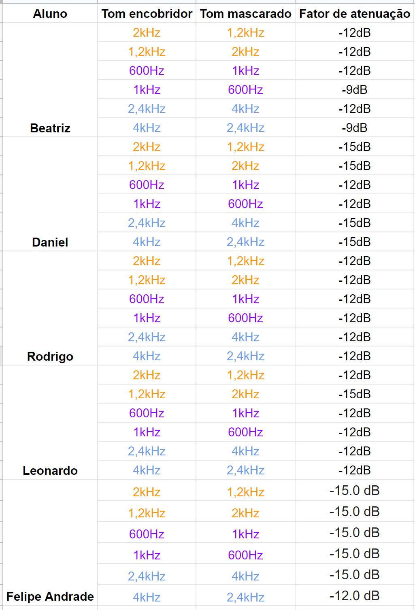Conclusões
Beatriz: O fator de atunuação é -12dB para a maioria das frequências, sendo que para 600Hz e 2400Hz sendo mascarado o tom de atenuação é de -9dB.
Felipe: O fator de atunuação é -15dB para todas os casos de mascaramento experimentados.
Rodrigo: O fator de atunuação é -12dB para todas os casos de mascaramento experimentados.
Daniel: O fator de atunuação ficou entre -15dB e -12dB para todos os teses realizados.
Leonardo: O fator de atenuação é -12 dB para a maioria dos casos de mascamento. Em um único caso, o fator foi de -15 dB.
Conclusão geral
Houve algumas diferenças em relação às diferentes plataformas que foram utilizadas para fazer o teste, essa diferença pode se dar pelo hardwares distintos que os integrantes do grupo utilizaram, pois em casos de baixa frequência eles podem possuir uma faixa de frequência mínima de execução, em relação a alta frequências também pode estar relacionado ao hardware. Porém, acima da questão do hardware utilizado, deve-se considerar que os teste foram realizados por diferentes pessoas, sendo que cada organismo possui as suas próprias capacidades, além do próprio fenótipo, que deve ser considerar para se avalizar a capacidade de audição de cada indivíduo.
Pesquisa
c. Descrever outro teste psicoacústico que não foi realizado nesta experiência.
Curvas de Fletcher-Munson permite ao usuário estimar as curvas de audibilidade. O usuário escuta um tom de referência com frequência de 880 Hz e intensidade constante ao longo do experimento. Esta é ajustada pelo próprio usuário logo no início. Existe, também, um conjunto de sinais de análise composto por tons de frequências 55, 110, 220, 440, 1760 e 3250 Hz. O usuário irá, então, para cada sinal de análise, regular a sua intensidade (que pode ir de 0 até 90 dB SPL) de forma que esta e a intensidade do sinal de referência sejam igualmente percebidas, ou seja, que os dois sinais tenham a mesma audibilidade. Isso resultará em um vetor de sete valores correspondentes às intensidades ajustadas para cada tom.
d. Indique um trabalho que aborde algum novo resultado de percepção psicoacústica ainda não abordado nas aulas, colocando um hyperlink no site.
JND de Frequência permite ao usuário estimar a JND de frequência para tons com intensidade e frequência especificadas. Para este teste, o usuário seleciona a frequência e intensidade com que deseja realizar o teste. Os valores possíveis para frequência são 200, 400, 600, 800, 1000, 2000, 4000 e 8000 Hz e para intensidade são 5, 10, 20, 40 e 80 dB SPL. Estes valores foram selecionados para facilitar a realização do teste, já que valores fora dessas faixas se tornam inaudíveis ou prejudiciais ao ouvido. Um tom de referência é criado com os parâmetros escolhidos. A seguir, o usuário escuta dois tons sucessivos: a referência (de frequência f) e um tom ligeiramente mais agudo (de frequência f+delta(f)), chamado de sinal de teste. O seu objetivo é determinar qual dos sinais escutados é o que possui maior frequência. Esse procedimento é repetido 20 vezes para diferentes valores de delta(f). Os valores de delta(f) aumentam geometricamente até um valor pré-estabelecido. A ordem com que aparecem para o usuário é aleatória e a ordem {sinal de referência, sinal de teste} também. Por fim, é criado um vetor de acertos e o resultado é exibido ao usuário em um gráfico.
Referência: https://pantheon.ufrj.br/bitstream/11422/11500/1/monopoli10008782.pdf